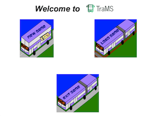

When you load TraMS, the TraMS Welcome Screen is displayed. There are three options on this screen:
You can create a New Game by clicking on the New Game picture. If you choose this option, please move to the "Create New Game" help topic.
You can load an Existing Game by clicking on the Load Game picture. If you choose this option, you will be prompted to choose the location of the saved game. Please then move to the "Load Existing Game" help topic.
You can also exit TraMS by clicking on the Exit Game picture at the bottom of the screen.